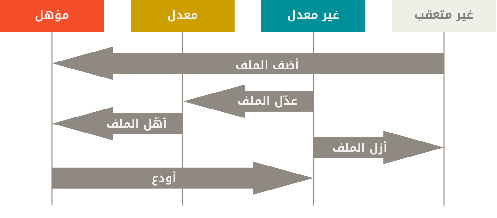

٢، ٢، تسجيل التعديلات في المستودع
الآن لديك مستودع جت أصيل على حاسوبك، وأمامك نسخة مسحوبة من جميع ملفاته، أي «نسخة عمل». غالبا ستود البدء بعمل تعديلات وإيداع لقطات من هذه التعديلات في مستودعك كل مرة يصل مشروعك إلى مرحلة تريد تسجيلها.
تذكر أن كل ملف في مجلد العمل لديك يمكن أن يكون في حالة من اثنتين: متعقَّب أو غير متعقَّب. الملفات المتعقبة هي الملفات التي كانت في اللقطة الأخيرة أو أي ملف أُهِّل حديثًا. ويمكن أن تكون غير معدَّلة، أو معدلة، أو مؤهلة. باختصار، الملفات المتعقبة هي الملفات التي يعرفها جت.
الملفات غير المتعقبة هي كل شيء آخر: أيّ ملفات في مجلد عملك لم تكن ضمن لقطتك الأخيرة وليست في منطقة التأهيل. عندما تستنسخ مستودعًا أول مرة، تكون جميع ملفاتك متعقبة وغير معدلة، لأن جت سَحَبها لك للتو ولم تعدّل فيها شيئا بعد.
وعندما تبدأ في تعديل ملفات، سيراها جت معدلة، لأنك غيّرتها عما كانت عليه في إيداعك الأخير. وعندما تشرع في العمل، ستنتقي من هذه الملفات ما تؤهله ثم تودِع هذه التعديلات المؤهلة، ثم تعيد الكَرَّة.

فحص حالة ملفاتك
الأداة الأساسية التي تستعملها لمعرفة أي ملف في أي حالة، هي أمر الحالة git status.
إذا نفّذت هذا الأمر مباشرةً بعد استنساخ مستودع جديد، سترى شيئًا مثل هذا:
$ git status
On branch master
Your branch is up-to-date with 'origin/master'.
nothing to commit, working tree cleanهذا يعني أن لديك مجلد عمل نظيف؛ أي أن لا ملف من ملفاتك المتعقبة معدل.
وأيضا لا يرى جت أي ملفات غير متعقبة، وإلا لَسَرَدها هنا.
وأخيرا، يخبرك هذا الأمر أي فرع أنت فيه، ويعلِمك أنه لم يختلف عن أخيه الفرع الذي في المستودع البعيد.
ذلك الفرع حتى الآن هو دائما master، وهو المبدئي؛ لا تحتاج أن تقلق بشأنه هنا.
سيناقش باب التفريع في جت الفروع والإشارات بالتفصيل.
|
غيّرت شركة جتهب (GitHub) اسم الفرع المبدئي من ولكن ما زال جت نفسه يسمي الفرع المبدئي |
لنقُل إنك أضفت ملفًا جديدًا إلى مشروعك، مثلا ملف README («اقرأني») صغير.
إذا لم يكن هذا الملف موجودًا من قبل، ونفّذت أمر الحالة git status، فسترى ملفك غير المتعقب هكذا:
$ echo 'My Project' > README
$ git status
On branch master
Your branch is up-to-date with 'origin/master'.
Untracked files:
(use "git add <file>..." to include in what will be committed)
README
nothing added to commit but untracked files present (use "git add" to track)نرى أن ملفك الجديد غير متعقب، لأنه تحت عنوان “Untracked files” («ملفات غير متعقبة») في ناتج الحالة.
«غير متعقب» لا يعني إلا أن جت يرى ملفًا لم يكن في اللقطة السابقة (الإيداع الأخير)، ولم تؤهله بعد. ولن يبدأ جت في ضمه إلى لقطات الإيداعات إلا بعد أن تخبره بذلك بأمر صريح.
إنه لا يفعل ذلك لكيلا تضم بالخطأ ملفات رقْمية مولدة أو ملفات أخرى لم تشأ ضمها أصلا.
ولكنك تريد ضم README، فهيا نبدأ تعقب هذا الملف.
تعقب ملفات جديدة
لبدء تعقب ملف جديد، استخدم أمر الإضافة git add.
فمثلا لبدء تعقب ملف README، نفّذ هذا:
$ git add READMEإذا كررت أمر الحالة، فسترى ملف README قد صار متعقبًا ومؤهلًا للإيداع:
$ git status
On branch master
Your branch is up-to-date with 'origin/master'.
Changes to be committed:
(use "git restore --staged <file>..." to unstage)
new file: READMEنعرف أنه مؤهلٌ لأنه تحت عنوان “Changes to be committed” («تعديلات ستُودَع»).
إذا أودعت الآن، فإن نسخة الملف وقت تنفيذ أمر الإضافة git add هي التي ستكون في اللقطة التاريخية التالية.
تذكر أنك عندما نفذت أمر الابتداء git init سابقًا، أتبعته بأمر الإضافة git add «ملفات» لبدأ تعقب ملفات مستودعك.
أمر الإضافة git add يُعطى مسار ملف أو مجلد. فإذا كان مجلدًا فإنه يضيف جميع الملفات التي فيه وفي أي مجلد فرعي فيه.
تأهيل ملفات معدلة
لنعدّل ملفًا قد جعلناه متعقبًا.
إذا عدّلت الملف المتعقب CONTRIBUTING.md وكررت أمر الحالة، فسترى ما يشبه هذا:
$ git status
On branch master
Your branch is up-to-date with 'origin/master'.
Changes to be committed:
(use "git reset HEAD <file>..." to unstage)
new file: README
Changes not staged for commit:
(use "git add <file>..." to update what will be committed)
(use "git checkout -- <file>..." to discard changes in working directory)
modified: CONTRIBUTING.mdيظهر اسم الملف CONTRIBUTING.md تحت عنوان “Changes not staged for commit” («تعديلات غير مؤهلة للإيداع») — الذي يعني أن ملفًا متعقبًا قد تغيّر في مجلد العمل، ولكنه لم يؤهل بعد.
لتأهيله، نفذ أمر الإضافة git add.
يُستعمل أمر الإضافة لأغراض عديدة: لبدء تعقب ملفات جديدة، ولتأهيل الملفات المعدلة، ولأفعال أخرى مثل إعلان حل نزاع دمج في ملف.
ربما من المفيد أن تعتبره بمعنى «أضف تحديدًا هذا المحتوى إلى الإيداع التالي» بدلا من «أضف هذا الملف إلى المستودع».
لننفذ git add الآن لتأهيل ملف CONTRIBUTING.md ثم نكرر git status:
$ git add CONTRIBUTING.md
$ git status
On branch master
Your branch is up-to-date with 'origin/master'.
Changes to be committed:
(use "git reset HEAD <file>..." to unstage)
new file: README
modified: CONTRIBUTING.mdكلا الملفين مؤهلان وسيكونان في إيداعك التالي.
لنقُل إنك تذكرت الآن تعديلًا طفيفًا أردته في ملف CONTRIBUTING.md قبل إيداعه.
ستفتح الملف مجددًا، وتعدل فيه، ثم تحفظه وتغلقه. الآن أنت جاهز للإيداع.
ولكن، لنرى الحالة git status مرة أخرى:
$ vim CONTRIBUTING.md
$ git status
On branch master
Your branch is up-to-date with 'origin/master'.
Changes to be committed:
(use "git reset HEAD <file>..." to unstage)
new file: README
modified: CONTRIBUTING.md
Changes not staged for commit:
(use "git add <file>..." to update what will be committed)
(use "git checkout -- <file>..." to discard changes in working directory)
modified: CONTRIBUTING.mdيا للهول!
لقد صار CONTRIBUTING.md مسرودًا أنه مؤهل وكذلك غير مؤهل.
كيف يُعقل هذا؟
يتضح أن جت يؤهل الملف تماما كما هو عندما تنفذ git add.
فإذا أودعت الآن، فإن ما سيودع هو نسخة CONTRIBUTING.md التي كانت موجودة عندما نفذت أمر الإضافة git add آخر مرة، وليس نسخة الملف الظاهرة لديك في مجلد العمل عندما تنفذ أمر الإيداع git commit.
فإن عدّلت ملفًا بعد إضافته، فعليك إضافته مرة أخرى لتأهيل النسخة الأخيرة منه:
$ git add CONTRIBUTING.md
$ git status
On branch master
Your branch is up-to-date with 'origin/master'.
Changes to be committed:
(use "git reset HEAD <file>..." to unstage)
new file: README
modified: CONTRIBUTING.mdالحالة الموجزة
مع كون ناتج أمر الحالة git status شاملًا، إلا أنه كثير الكلام.
يتيح جت أيضا خيارًا للحالة الموجزة، لترى تعديلاتك بإيجاز:
إذا نفذت git status -s أو git status --short، فسيعطيك الأمر ناتجًا أقصر كثيرا:
$ git status -s
M README
MM Rakefile
A lib/git.rb
M lib/simplegit.rb
?? LICENSE.txtأمام الملفات الجديدة التي لم تُتعقب علامتا ??. والملفات الجديدة المؤهلة أمامها A (اختصار «أضيف»). والملفات المعدّلة أمامها M (اختصار «معدّل»). وهكذا.
ويوجد عمودان في الناتج أمام أسماء الملفات: العمود الأيسر يوضّح حالته في منطقة التأهيل، والأيمن يوضّح حالته في شجرة العمل.
لذا ففي ناتج مثالنا هذا، ملف README معدّل في مجلد العمل ولكنه ليس مؤهلا بعد، ولكن ملف lib/simplegit.rb معدّل ومؤهل.
وملف Rakefile معدّل ومؤهل ثم معدّل مرة أخرى، ففيه تعديلات مؤهلة وتعديلات غير مؤهلة.
تجاهل ملفات
سيكون لديك غالبًا فئة من الملفات التي لا تريد من جت أن يضيفها آليًا ولا حتى أن يخبرك أنها غير متعقبة.
أشهر أمثلتها الملفات الموّلدة آليًا مثل ملفات السجلات أو الملفات المبنية.
يمكنك عندئذٍ إنشاء ملف يسمى .gitignore (يبدأ بنقطة، لجعله مخفيًّا) ليسرد أنماط أسماء تلك الملفات ليتجاهلها جت.
هذا مثال على ملف .gitignore :
$ cat .gitignore
*.[oa]
*~يطلب السطر الأول من جت أن يتجاهل أي ملفات ينتهي اسمها بـ “.o” أو “.a” — ملفات الكائنات وملفات المكتبات المضغوطة التي قد تُنتج أثناء بناء مصدرك البرمجي.
ويطلب السطر الثاني من جت أن يتجاهل جميع الملفات التي ينتهي اسمها بعلامة التلدة (~)، التي تستعملها محررات نصوص عديدة مثل Emacs لتمييز الملفات المؤقتة.
يمكنك كذلك إضافة مجلد log أو tmp أو pid، أو الوثائق المولدة آليًا، إلخ.
إعداد ملف التجاهل .gitignore لمستودعك الجديد قبل الانطلاق في المشروع هو تفكير حسن عمومًا، لكيلا تودع بالخطأ ملفات يقينًا لا تريدها في مستودعك.
إليك قواعد الأنماط التي تستطيع استعمالها في ملف التجاهل:
-
تُهمل الأسطر الفارغة أو الأسطر البادئة بعلامة
#. -
يمكن استعمال أنماط توسيع المسارات (glob) المعتادة (ستُوّضح بالتفصيل)، وستُطبق في جميع مجلدات شجرة العمل.
-
يمكنك بدء الأنماط بفاصلة مائلة أمامية (
/) لمطابقة الملفات أو المجلدات في المجلد الحالي فقط، وليس أي مجلد فرعي. -
يمكنك إنهاء الأنماط بفاصلة مائلة أمامية (
/) لتحديد مجلد. -
يمكنك نفي نمط ببدئه بعلامة تعجب (
!).
تشبه أنماط glob نسخة مُيسَّرة من «التعابير النمطية»، وتستعملها الصدفات.
فتُطابق النجمة (*) صفر أو أكثر من المحارف؛ ويُطابق [abc] أي حرف داخل القوسين المربعين (أي a أو b أو c في هذه الحالة)؛ وتُطابق علامة الاستفهام الغربية (?) مِحرَفًا واحدًا؛ ولمطابقة مدًى من المحارف، نكتب أول مِحرف وآخر مِحرف (بترتيبهما في Unicode) داخل قوسين مربعين وبينهما شرطة، فمثلا لمطابقة رقمًا من الأرقام المغربية (من 0 إلى 9) نكتب [0-9].
كذلك النجمتان يطابقان أي عدد من المجلدات الفرعية، فمثلا يطابق النمط a/**/z كلًا من a/z و a/b/z و a/b/c/z وهكذا.
إليك مثال آخر على ملف .gitignore :
#⭅ تجاهل كل الملفات ذات الامتداد a #
*.a
#⭅ لكن تعقب lib.a، حتى لو كنت تتجاهل جميع ملفات a بالأعلى #
!lib.a
#⭅ تجاهل فقط TODO في المجلد الحالي، وليس subdir/TODO مثلا #
/TODO
#⭅ تجاهل أي مجلد اسمه build وكل شيء داخله #
build/
#⭅ تجاهل doc/notes.txt ولكن ليس doc/server/arch.txt مثلا #
doc/*.txt
#⭅ تجاهل جميع pdf في مجلد doc أو أي مجلد فرعي فيه #
doc/**/*.pdf|
يرعى جتهب قائمةً شاملة نسبيًّا من أمثلة ملفات التجاهل الحسنة لعشرات المشروعات واللغات في https://github.com/github/gitignore، إن احتجت شيئًا تبدأ منه لمشروعك. |
|
قد يكون لدى المستودع في الحالات اليسيرة ملف تجاهل واحد في مجلد الجذر، والذي يطبق على المستودع بجميع مجلداته الفرعية. ولكن ممكن كذلك وجود ملفات تجاهل أخرى في مجلدات فرعية. وملفات التجاهل الداخلية هذه لا تطبق قواعدها إلا على الملفات التي في مجلداتها. ومثلا لدى مستودع نواة لينكس ٢٠٦ ملف تجاهل. يخرج عن نطاق الكتاب الغوص في تفاصيل ملفات التجاهل المتعددة؛ انظر |
رؤية تعديلاتك المؤهلة وغير المؤهلة
إذا كنت تجد ناتج أمر الحالة git status شديد الغموض — تريد معرفة ما الذي عدّلته تحديدًا، وليس مجرد أسماء الملفات التي تعدّلت — فعليك بأمر الفرق git diff.
نتناوله بالتفصيل فيما بعد، لكنك في الغالب تستخدمه لإجابة أحد التساؤلين: ما الذي عدّلته ولم تؤهله بعد؟
وما الذي أهّلته وعلى وشك إيداعه؟
وبالرغم من أن أمر الحالة git status يجيبهما إجابةً عامة جدًا بسرد أسماء الملفات، إلا أن أمر الفرق git diff يُظهر لك بالتحديد السطور المضافة والمزالة: الرُقعة، إن جاز التعبير.
لنقُل إنك عدّلت ملف README مجددا وأهّلته، ثم عدّلت ملف CONTRIBUTING.md من غير تأهيله.
إذا نفذت أمر الحالة، سترى من جديد شيئًا مثل هذا:
$ git status
On branch master
Your branch is up-to-date with 'origin/master'.
Changes to be committed:
(use "git reset HEAD <file>..." to unstage)
modified: README
Changes not staged for commit:
(use "git add <file>..." to update what will be committed)
(use "git checkout -- <file>..." to discard changes in working directory)
modified: CONTRIBUTING.mdلرؤية ما الذي عدّلته ولم تؤهله بعد، اكتب git diff من غير أي معاملات أخرى:
$ git diff
diff --git a/CONTRIBUTING.md b/CONTRIBUTING.md
index 8ebb991..643e24f 100644
--- a/CONTRIBUTING.md
+++ b/CONTRIBUTING.md
@@ -65,7 +65,8 @@ branch directly, things can get messy.
Please include a nice description of your changes when you submit your PR;
if we have to read the whole diff to figure out why you're contributing
in the first place, you're less likely to get feedback and have your change
-merged in.
+merged in. Also, split your changes into comprehensive chunks if your patch is
+longer than a dozen lines.
If you are starting to work on a particular area, feel free to submit a PR
that highlights your work in progress (and note in the PR title that it'sيقارن هذا الأمر بين محتويات مجلد العمل ومنطقة التأهيل، ويُخبرك بما عدّلته ولم تؤهله بعد.
إذا أردت رؤية ما الذي أهّلته ليكون في الإيداع التالي، يمكنك استخدام git diff --staged.
يقارن هذا الأمر بين تعديلاتك المؤهلة وإيداعك الأخير:
$ git diff --staged
diff --git a/README b/README
new file mode 100644
index 0000000..03902a1
--- /dev/null
+++ b/README
@@ -0,0 +1 @@
+My Projectمهمٌ ملاحظة أن git diff وحده لا يُظهر جميع التعديلات التي تمت بعد الإيداع الأخير؛ إنما يُظهر التعديلات غير المؤهلة فقط.
فإذا أهّلت جميع تعديلاتك، فلن ترَ من git diff أي ناتج.
مثالٌ آخر: إذا أهّلت ملف CONTRIBUTING.md ثم عدّلته، يمكنك بأمر الفرق معرفة تعديلات الملف التي أُهّلِت والتعديلات التي لم تؤهل.
فإذا كانت بيئتنا تبدو هكذا:
$ git add CONTRIBUTING.md
$ echo '# test line' >> CONTRIBUTING.md
$ git status
On branch master
Your branch is up-to-date with 'origin/master'.
Changes to be committed:
(use "git reset HEAD <file>..." to unstage)
modified: CONTRIBUTING.md
Changes not staged for commit:
(use "git add <file>..." to update what will be committed)
(use "git checkout -- <file>..." to discard changes in working directory)
modified: CONTRIBUTING.mdيمكننا إذًا بأمر الفرق git diff أن نرى ما لم يؤهل بعد:
$ git diff
diff --git a/CONTRIBUTING.md b/CONTRIBUTING.md
index 643e24f..87f08c8 100644
--- a/CONTRIBUTING.md
+++ b/CONTRIBUTING.md
@@ -119,3 +119,4 @@ at the
## Starter Projects
See our [projects list](https://github.com/libgit2/libgit2/blob/development/PROJECTS.md).
+# test lineومع خيار «المؤهَّل»: git diff --cached، نرى ما الذي أهّلته حتى الآن (الخياران --staged و --cached مترادفان):
$ git diff --cached
diff --git a/CONTRIBUTING.md b/CONTRIBUTING.md
index 8ebb991..643e24f 100644
--- a/CONTRIBUTING.md
+++ b/CONTRIBUTING.md
@@ -65,7 +65,8 @@ branch directly, things can get messy.
Please include a nice description of your changes when you submit your PR;
if we have to read the whole diff to figure out why you're contributing
in the first place, you're less likely to get feedback and have your change
-merged in.
+merged in. Also, split your changes into comprehensive chunks if your patch is
+longer than a dozen lines.
If you are starting to work on a particular area, feel free to submit a PR
that highlights your work in progress (and note in the PR title that it's|
فروقات جت باستخدام أداة خارجية
سنستمر في استعمال أمر الفرق |
إيداع تعديلاتك
الآن وقد هيّأت منطقة تأهيلك كما تحب، يمكنك أن تودع تعديلاتك.
تذكر أنه لن يُحفظ في هذا الإيداع أي شي ما زال غير مؤهل — أيْ أيّ ملفات أنشأتها أو عدّلتها ولم تنفذ git add عليها بعدما عدلتها؛
بل ستبقى ملفات معدلة على القرص.
لنقُل إنك عندما نفذت أمر git status رأيت أن كل شيء مؤهل، لذا فأنت الآن مستعد لإيداع تعديلاتك.
أسهل طريقة للإيداع هي كتابة git commit:
$ git commitفعل هذا يفتح محررك المختار.
|
يعيّن «محررَك المختار» متغيرُ بيئة المحرر |
يُظهر المحرر النصَ التالي (المثال من Vim):
# Please enter the commit message for your changes. Lines starting
# with '#' will be ignored, and an empty message aborts the commit.
# On branch master
# Your branch is up-to-date with 'origin/master'.
#
# Changes to be committed:
# new file: README
# modified: CONTRIBUTING.md
#
~
~
~
".git/COMMIT_EDITMSG" 9L, 283Cويترجم أولها إلى: «أدخل رسالة الإيداع لتعديلاتك. الأسطر البادئة بعلامة # ستُهمل، ورسالة فارغة ستلغي الإيداع.»
نرى أن رسالة الإيداع المبدئية تشمل ناتج أمر الحالة الأحدث في صورة تعليق، وأن بها سطر فارغ في أولها. يمكنك إزالة هذه التعليقات وكتابة رسالة إيداعك، أو تركها في مكانها لتتذكر ماذا تودع.
|
إذا احتجت تذكيرًا أشد تفصيلًا بما عدّلت، يمكنك إمرار خيار الإطناب |
عندما تحفظ وتغلق المحرر، سيصنع جت إيداعك بالرسالة التي كتبتها (ما عدا الفروقات والتعليقات، أي الأسطر البادئة بعلامة #).
يمكنك عوضًا عن ذلك كتابة رسالة إيداعك في أمر الإيداع نفسه، بالخيار -m، مثل هذا:
$ git commit -m "Story 182: fix benchmarks for speed"
[master 463dc4f] Story 182: fix benchmarks for speed
2 files changed, 2 insertions(+)
create mode 100644 READMEالآن قد صنعت إيداعك الأول!
نرى أن الإيداع قد أخبرك شيئًا عن نفسه، مثل الفرع الذي أودعت فيه (master)، وبصمة الإيداع (463dc4f)، وعدد الملفات المعدّلة (2 files changed)، وإحصاءات عن السطور المضافة والمزالة في هذا الإيداع (2 insertion(+)).
تذكر أن هذا الإيداع يسجل اللقطة التي أعددتها في منطقة تأهيلك. أيّ ملف عدّلته ولم تؤهله سيظل جالسًا في مجلد العمل وهو معدَّل؛ يمكنك صنع إيداع آخر لإضافته إلى تاريخ مشروعك. في كل مرة تصنع إيداعًا، تسجل من مشروعك لقطة يمكنك إرجاع مشروعك إليها أو المقارنة معها فيما بعد.
تخطي منطقة التأهيل
مع أن منطقة التأهيل مفيدة لدرجة مدهشة في صياغة الإيداعات كما تشاء بالضبط، إلا أنها أحيانًا أعقد مما تحتاج في عملك.
يتيح لك جت اختصارًا سهلًا متى أردت تخطي منطقة التأهيل:
إضافة الخيار -a إلى أمر git commit تجعل جت يؤهل من نفسه كل ملف متعقب قبل هذا الإيداع، لتتخطى مرحلة الإضافة:
$ git status
On branch master
Your branch is up-to-date with 'origin/master'.
Changes not staged for commit:
(use "git add <file>..." to update what will be committed)
(use "git checkout -- <file>..." to discard changes in working directory)
modified: CONTRIBUTING.md
no changes added to commit (use "git add" and/or "git commit -a")
$ git commit -a -m 'Add new benchmarks'
[master 83e38c7] Add new benchmarks
1 file changed, 5 insertions(+), 0 deletions(-)لاحظ أنك لم تحتجْ إلى تنفيذ git add على ملف CONTRIBUTING.md في هذه الحالة قبل الإيداع،
لأن خيار -a يضم جميع الملفات المعدلة.
هذا مريح، لكن احذر: قد يضم هذا الخيار تعديلات غير مرغوب فيها.
إزالة ملفات
لإزالة ملف من جت، عليك أن تزيله من ملفاتك المتعقبة (أو بتعبير أدق، من منطقة تأهيلك)، ثم تودع.
يفعل أمر الإزالة git rm هذا، وأيضا يزيل الملف من مجلد عملك حتى لا تراه ملفًا غير متعقب في المرة القادمة.
إذا أزلت الملف من مجلد عملك فقط، سيظهر تحت عنوان “Changes not staged for commit” («تعديلات غير مؤهلة للإيداع») في ناتج أمر الحالة:
$ rm PROJECTS.md
$ git status
On branch master
Your branch is up-to-date with 'origin/master'.
Changes not staged for commit:
(use "git add/rm <file>..." to update what will be committed)
(use "git checkout -- <file>..." to discard changes in working directory)
deleted: PROJECTS.md
no changes added to commit (use "git add" and/or "git commit -a")عندئذٍ تنفيذك أمر git rm يؤهل إزالة الملف:
$ git rm PROJECTS.md
rm 'PROJECTS.md'
$ git status
On branch master
Your branch is up-to-date with 'origin/master'.
Changes to be committed:
(use "git reset HEAD <file>..." to unstage)
deleted: PROJECTS.mdعندما تودع في المرة القادمة ستجد أن الملف قد ذهب ولم يعد متعقبًا.
وإذا كنت قد عدّلت الملف أو كنت قد أضفته بالفعل إلى منطقة التأهيل، فعليك إزالته عَنوةً بالخيار -f.
هذه ميزة أمان لكيلا تزيل بالخطأ بيانات لم تسجلها بعد في لقطة ولا يمكن استردادها من جت.
شيءٌ آخر مفيد قد تود فعله هو إبقاء الملف في شجرة عملك لكن إزالته من منطقة تأهيلك.
بلفظ آخر، تريد أن ينسى جت وجوده ولا يتعقبه ولكن يبقيه لك على قرصك.
هذا مفيد خصوصًا إن نسيت إضافة شيء إلى ملف التجاهل .gitignore ثم أهّلته بالخطأ، مثل ملف سجل كبير أو مجموعة من الملفات المبنية.
استعمل خيار --cached («مؤهَّل») مع أمر الإزالة لفعل هذا (الخياران --staged و --cached مترادفان):
$ git rm --cached READMEيمكنك إعطاءه أسماء ملفات أو مجلدات أو أنماط توسيع المسارات (glob). يعني هذا أن بإمكانك فعل أشياء مثل:
$ git rm log/\*.logلاحظ الشرطة المائلة الخلفية (\) قبل النجمة *؛
هذا ضروري، لأن جت يوسّع بنفسه أسماء الملفات بعد أن توسّعها صدفتك. فبغير الشرطة المائلة الخلفية، ستوسع الصدفة أسماء الملفات قبل أن يراها جت.
يحذف هذا الأمر جميع الملفات ذات الامتداد .log في مجلد log/.
أو يمكنك فعل شيء مثل هذا:
$ git rm \*~يحذف هذا الأمر جميع الملفات المنتهي اسمها بعلامة التلدة (~).
نقل ملفات
لا يتعقب جت حركة الملفات تعقبًا صريحًا، خلافًا لكثير من أنظمة إدارة النسخ الأخرى. فإذا غيّرت اسم ملف في جت، لا يخزن جت بيانات وصفية تخبره أنك غيرته. لكن جت ذكي جدًا في تخمين ذلك وهو أمام الأمر الواقع — سنتعامل مع اكتشاف نقل الملفات بعد قليل.
لذا فقد تجد أنه من المحيّر وجود أمر «نقل» (mv) في جت.
فإذا أردت تغيير اسم ملف في جت، يمكنك طلبه هكذا:
$ git mv file_from file_toوسيعمل كما ينبغي. وفي الحقيقة، إذا نفذت أمرًا مثل هذا، ونظرت إلى الحالة، سترى أن جت يعتبره تغيير اسم ملف:
$ git mv README.md README
$ git status
On branch master
Your branch is up-to-date with 'origin/master'.
Changes to be committed:
(use "git reset HEAD <file>..." to unstage)
renamed: README.md -> READMEولكن هذا مكافئ لتنفيذ شيء مثل هذا:
$ mv README.md README
$ git rm README.md
$ git add READMEيخمن جت في سِرِّه أن الاسم قد تغير، لذا فلا يهم إن غيّرت اسمه بهذه الطريقة أو عبر نظام التشغيل أو مدير الملفات (مثلا بأمر النظام mv).
الفرق الحقيقي الوحيد هو أن git mv أمر واحد وليس ثلاثة؛ إنه وسيلة راحة.
والأهم أنك تستطيع استخدام أي أداة تريدها لتغيير أسماء الملفات، ثم تتعامل مع الإضافة والإزالة في جت فيما بعد، قبل الإيداع.